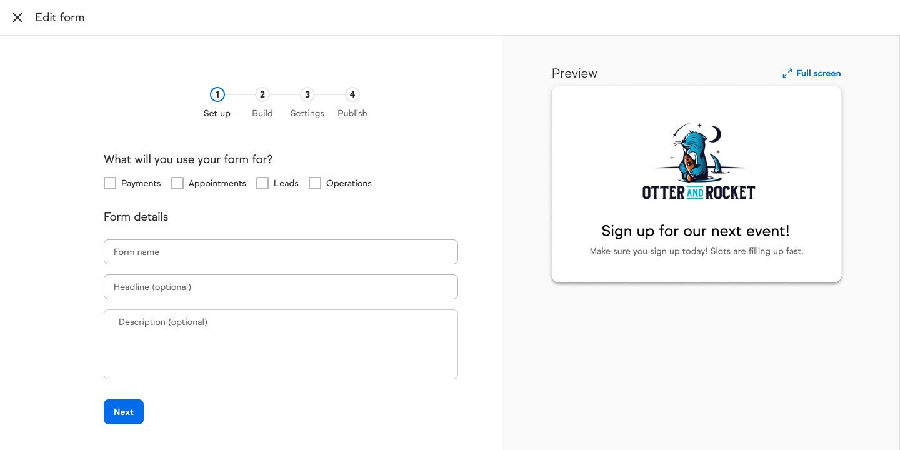
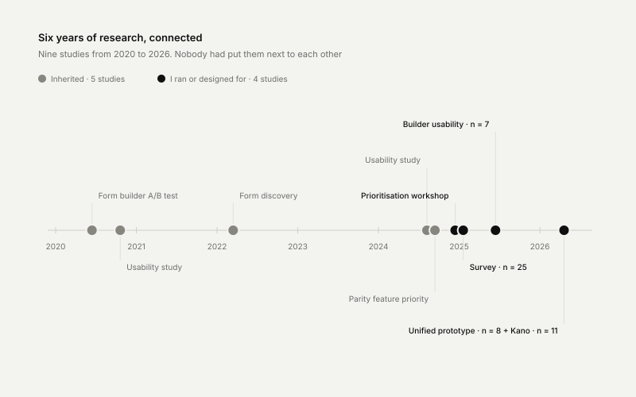
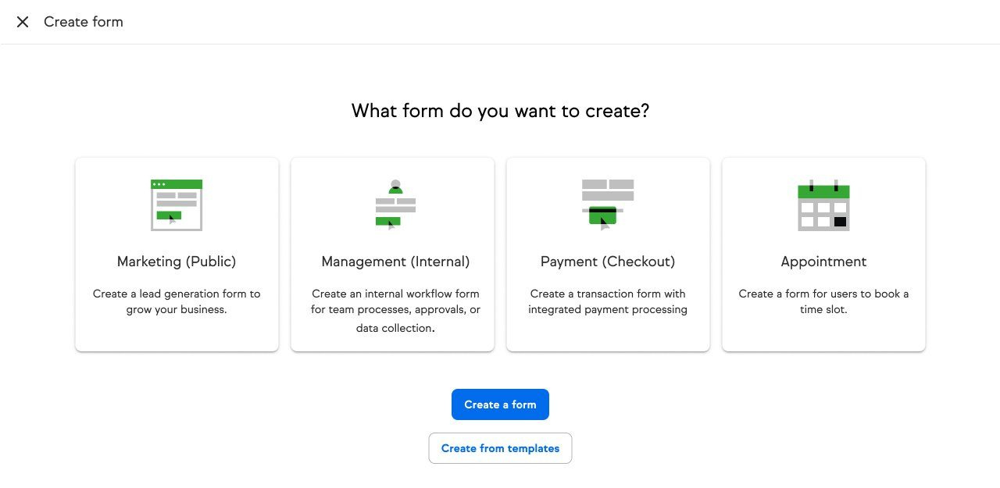
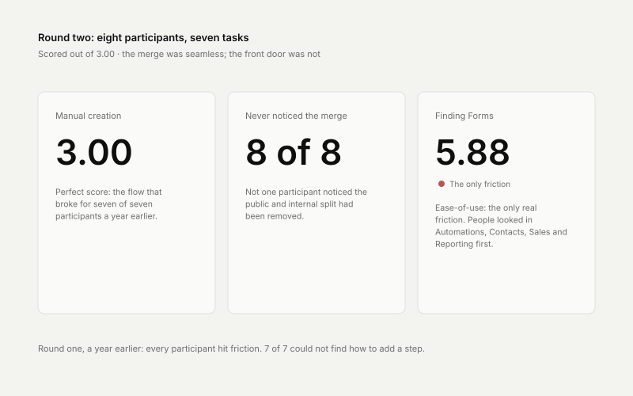
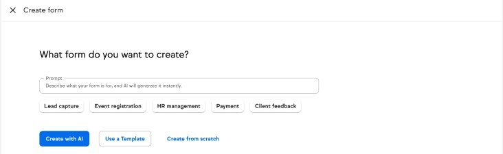
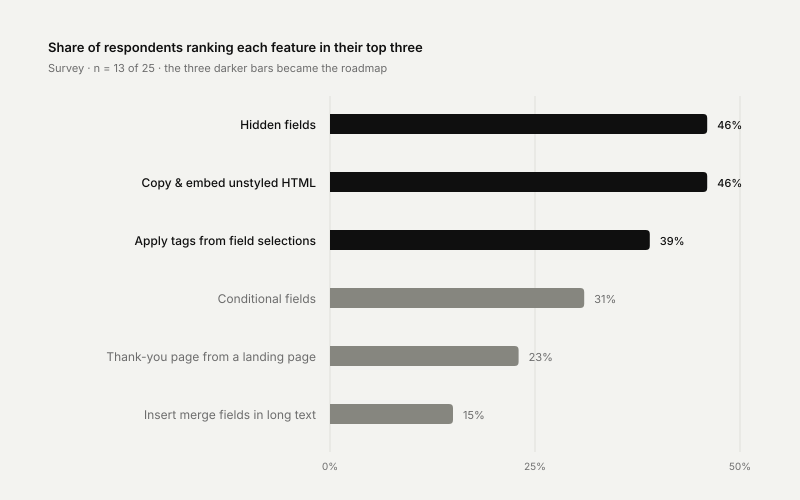
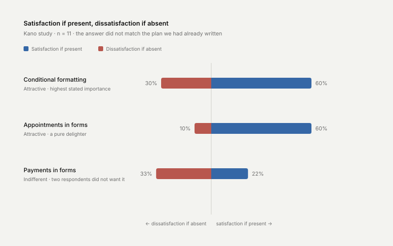

Seven builders,
one system
Seven form builders doing one job, and no single owner. I framed the problem, ran the research, designed the system — and changed the roadmap with what I found.

Product screens, captured from demo accounts.
Seven ways to build a form — and users still left
Four live form products and three legacy ones, each with its own UX and its own owning team. Every improvement got rebuilt per builder or shipped to just one. Nobody owned the whole problem because it was not any one team’s. I took it on.
Users could not tell them apart
The naming was the product’s vocabulary, not theirs. Legacy migration stalled for the same reason — with three modern builders, there was no obvious one to move to.
So they built forms elsewhere
Four rival form tools showed up in our own survey. One general-purpose tool alone was named by a quarter of respondents.
One form had got worse
I pulled every form’s measured score before drawing anything. Only one hit its target — and the most-used form scored lower after a rebuild than before it.
End-to-end design leadership
I was the only designer on the initiative. I did not contribute to this — I framed it, ran the research, designed it, sold it and oversaw delivery.
Connected six years of orphaned research
Studies going back to 2020 each answered one question and then went quiet. Nobody had put them next to each other. Five prior studies are the reason I could argue this was structural and not a fresh opinion.
Ran the primary research
A 25-person survey with two researchers, a nine-platform competitor audit, a prioritisation workshop, and designer of record on both usability studies.
Defined the north star and phasing
Parity first, consolidation second, appointments and payments after. Checkout belonged to another team, so the phasing was also a buy-in problem — I had to win that team before I could design into their surface.
Argued against the full rebuild
A rebuild was the assumed answer. I showed the data models were already sound and the fragmentation was a surface problem — twelve-plus months and regression risk for marginal value. Winning that framing set the scope of everything after.

Ask what the form is for
Seven products became one builder and four use cases. The categorisation is not cosmetic — it is what tells the system where a form is allowed to appear. Both vocabularies appear on purpose: the use case leads, the legacy name follows in brackets, so existing users can still find what they know.

Consolidation is also what made AI generation possible. One builder means one generation target, so a model can emit a complete form with full feature support — which no fragmented system could have offered.
Round one went badly, and that was useful
Round one — 7 participants
Every participant hit friction. Seven of seven could not find how to add a step; six of seven stumbled on inherited taxonomy. The live side-by-side preview was named most often as the thing that built trust.
Round two — 8 participants
Manual creation scored a perfect 3.00 on the flow that had broken for everyone a year earlier. Most participants never noticed the public/internal split had been removed at all.
The finding that stuck
Nobody could find Forms — they looked in Automations, Contacts, Sales and Reporting first. The merge was invisible; the front door was not.


Where I changed direction

A Kano study on the three candidate features did not match the plan we had already written. Conditional logic was not on the roadmap at all, even though it was the top complaint in the survey and the top-ranked feature in the study. I took the results to leadership with the evidence behind them and changed the roadmap: conditional logic moved up, and the payments phase came out.

What shipped, and what is parked
I would rather show this honestly than pretend it all landed. The half that shipped is the half I could justify with a ranked user need; the half that did not is the half I could not fund once the replan hit.